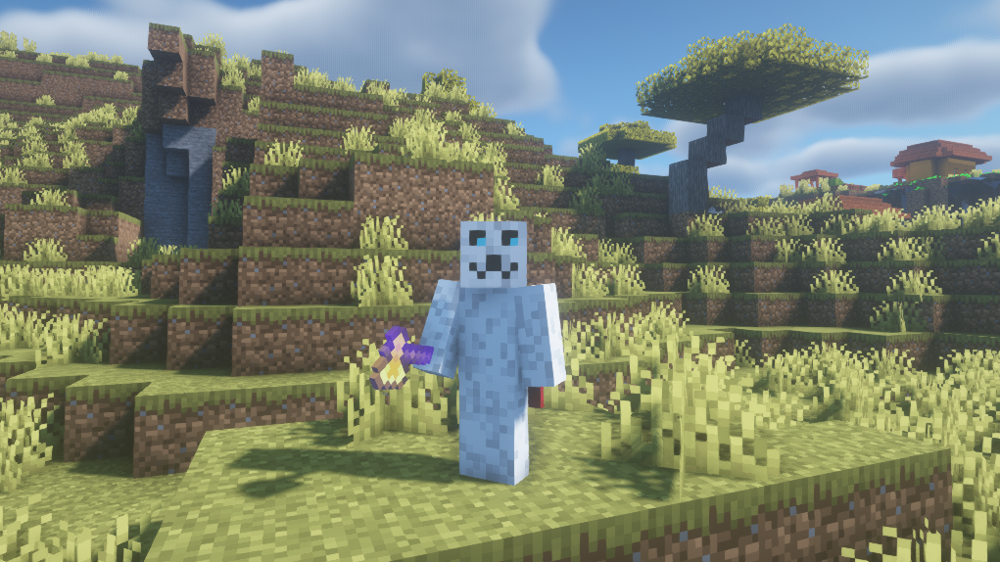
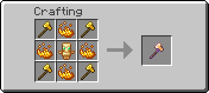
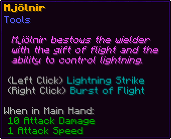
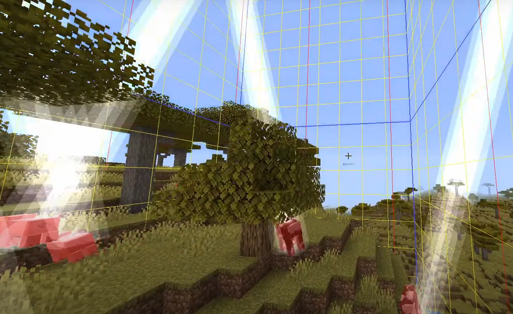
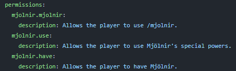

Mjölnir
Overview
Mjölnir is a little Minecraft plugin I made which adds Thor's hammer to the game. It has a custom crafting recipe, left- and right-click abilities, and a few other things. The plugin was made with the Spigot API and therefore is officially available on spigotmc.org (link above). There's also a slightly outdated YouTube video about it and a GitHub repository with the code (all linked above).
How to Use
The plugin requires the server to be running on Spigot in order to work. Once you have downloaded the file (downloads are at the bottom of this page), you can move or upload it to your server's plugins folder.
Crafting
And yes, Mjölnir is a recipe in the recipe book.
Features
Left-clicking the air while holding Mjölnir will strike all the entities in the same chunk as you are with lightning, dealing 40 damage (20 hearts). Right-clicking the air while holding Mjölnir gives the player jump boost and regeneration for a short period of time. The axe itself is enchanted with unbreaking III, mending, sharpness V, and fire aspect II.
Commands
/mjolnir [player]
Gives the specified player Mjölnir, default is the player who sent the command. Requires the permission mjolnir.mjolnir in versions higher than 2.0.
/thunder
VERSION 1.x ONLY. Does the same thing as Mjölnir's left-click ability.
Permissions
***mjolnir.have doesn't completely prevent Mjölnir's use (sorry, I'm a beginner plugin programmer).
Downloads
Mjölnir-2.1.0-1.18.2.jar — 1.18, 1.19
Mjölnir-1.0.1-1.16.5.jar — 1.16